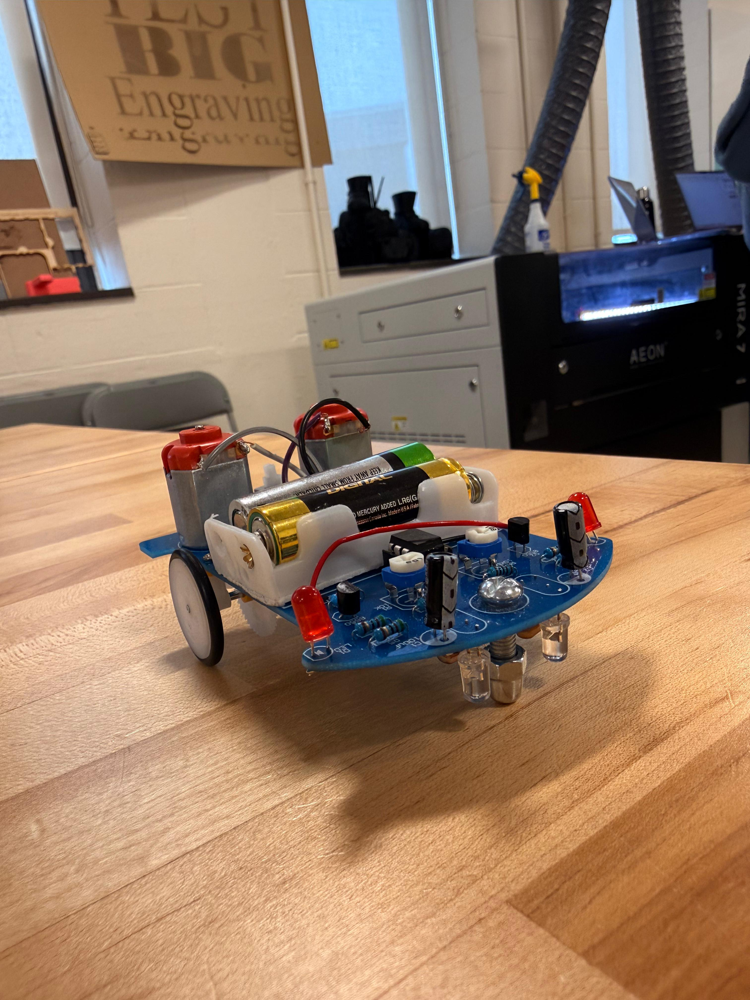
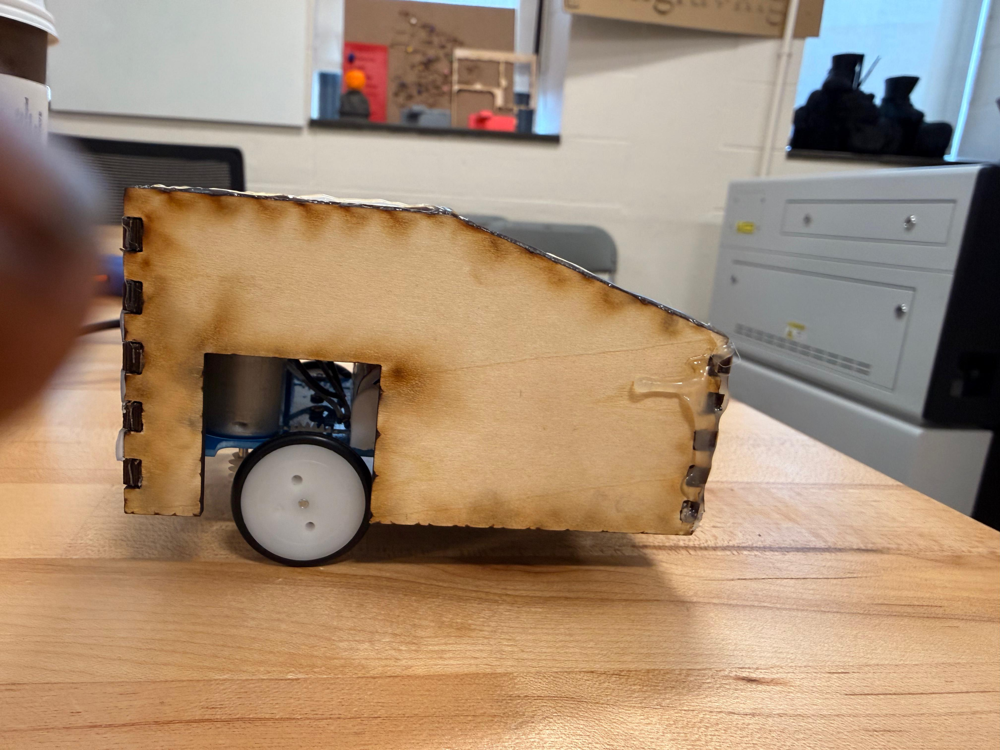

Design Project #3 — Form and Fit for Electronics
A collaborative engineering project focused on assembling a robot kit and designing two chassis enclosures optimized for both 3D printing and laser cutting.
Project Overview
For this project, my partner Gerrardo and I assembled a robot kit and created two enclosure designs: one optimized for 3D printing and another for laser cutting. The goal was to understand how design changes depending on manufacturing method while making sure the final chassis allowed the robot to function properly.
Part 1: Assembling the Robot
In the first part of the project, Gerrardo and I assembled the robot by soldering the electronic components onto the circuit board. Before building, I read the instruction manual and expected the main challenges to be soldering precision,identifying components correctly, and making sure the motors,sensors, and wires were installed in the proper locations.The manual was helpful because it included diagrams and a step by step process, but some images were small and could have been clearer for beginners. During assembly, we divided the work by organizing the components, checking placement, and soldering the board carefully. This part of the project helped me better understand the robot’s layout and how the electronics connect to the physical structure. It also prepared us for the next stages because building the robot first made it easier to design an enclosure that matched the actual dimensions and functional needs.
Part 2: Designing and 3D Printing the Chassis
After assembling the robot, we measured it using digital calipers so we could create a chassis that fit accurately. We paid attention to the board size,wheel clearance,sensor position, battery access, LED visibility, and power button location. Using these measurements, we designed a 3D printed enclosure in CAD that would protect the electronics while still allowing the robot to move and function correctly. The 3D printed version gave us more freedom to create curved surfaces and a single integrated shell. After exporting the model as an STL file, we prepared it in slicer software and printed the first version. Testing the fit showed how important tolerances are in 3D printing, since even a small dimensional mismatch can affect movement or access. This step taught me that 3D printing is powerful for custom geometry, but it requires careful iteration and adjustment to get a final design that fits and works well.
Part 3: Designing and Laser Cutting the Chassis
For the final part, we designed a second enclosure specifically for laser cutting. Unlike the 3D printed version, this design had to be built from flat panels that could be cut from sheet material and assembled afterward. We used a finger-joint style so the pieces could interlock and create a rigid structure around the robot. The chassis still needed to meet the same functional requirements: open space for the wheels, sensor access to the ground, visible LEDs, battery access, and a reachable power button. Laser cutting changed the way we approached design because it required thinking in flat surfaces and joints instead of curved forms. After cutting the pieces, we assembled the enclosure and checked its fit on the robot. This part of the project clearly showed the difference between additive and subtractive manufacturing. It also taught me that the manufacturing process strongly shapes design decisions, materials, tolerances, and the overall structure of a final product.
Final Reflection
This project showed me that engineering is not only about making something that works, but also about designing with manufacturing constraints in mind. Working with Gerrardo helped us divide tasks efficiently and compare ideas throughout the process. I learned how electronics assembly, measurement, CAD, prototyping, and fabrication all connect in one workflow. The biggest lesson was the importance of iteration: a design may look correct digitally, but testing it physically reveals what needs improvement. Comparing 3D printing and laser cutting also helped me understand how different tools require different design strategies.
Gallery




Quick Facts
Course: ENGR11
Project: Design Project #3
Partner: Gerrardo Rios
Focus: Form and fit for electronics
Tools: OnShape,Digital calipers,PrusaSlicer,Laser cutter,Lightburn
Methods: 3D printing and laser cutting
Key Requirements
• Wheels must move freely
• Sensors must see the ground
• LEDs must remain visible
• Batteries must be accessible
• Power button must be reachable
What I Learned
• Soldering requires precision and patience
• Accurate measurements are essential for fit
• 3D printing supports more organic geometry
• Laser cutting requires flat-part thinking and assembly planning
Why It Matters
This project connected electronics, CAD, and fabrication into one complete design process. It showed how engineers must balance function, manufacturing limits and iteration in order to create a successful product.